Contents
- PART 0: INSTALL / ADD TO PATH
- PART 1: INTRODUCTION - WHAT IS A SPARSE GRID
- PART 1: INTRODUCTION - INGREDIENTS OF A SPARSE GRID. 1D KNOTS
- PART 1: INTRODUCTION - INGREDIENTS OF A SPARSE GRID. LEV2KNOTS FUNCTION.
- PART 1: INTRODUCTION - INGREDIENTS OF A SPARSE GRID. MULTI-INDEX SET
- the package provides two functions to generate multi-index sets.
- PART 1: INTRODUCTION - DATA-STRUCURE
- PART 1: INTRODUCTION - MODIFY THE DOMAIN OF A SPARSE GRID
- PART 1: INTRODUCTION - REDUCE A SPARSE GRID
- PART 2: EVALUATE A FUNCTION ON A SPARSE GRID
- PART 2: EVALUATE A FUNCTION ON A SPARSE GRID - USE RECYCLING FEATURE
- PART 2: EVALUATE A FUNCTION ON A SPARSE GRID - USE RECYCLING FEATURE FOR VECTOR OUTPUT
- PART 2: EVALUATE A FUNCTION ON A SPARSE GRID - USE PARALLEL FEATURE
- PART 2: EVALUATE A FUNCTION ON A SPARSE GRID
- PART 3: INTEGRATION - BASICS
- PART 3: INTEGRATION - USE OTHER QUADRATURE KNOTS
- PART 3: INTEGRATION - MODIFY QUADRATURE DOMAIN
- PART 3: INTEGRATION - COMPUTE MOMENTS OF RANDOM VARIABLES
- PART 3: INTEGRATION - RECYCLE EVALUATIONS FROM PREVIOUSLY COMPUTED GRIDS AND PARALLEL COMPUTATION
- PART 3: INTEGRATION - HOW TO BUILD MORE COMPLEX SPARSE GRIDS. ANISOTROPIC GRIDS
- PART 3: INTEGRATION - HOW TO BUILD MORE COMPLEX SPARSE GRIDS. USE SMOLYAK_MULTIINDICES
- PART 3: INTEGRATION - CONVERGENCE STUDY
- PART 4: INTERPOLATION ON A SPARSE GRID. BASICS
- PART 4: INTERPOLATION ON A SPARSE GRID - INTERPOLATION ERROR ON SPARSE GRID POINTS
- PART 4: INTERPOLATION ON A SPARSE GRID - CONVERGENCE STUDY
- PART 5: COMPUTE THE g-PCE OF A FUNCTION GIVEN ITS SPARSE GRID APPROXIMATION
% Examples of use of Sparse Grid Matlab Kit %---------------------------------------------------- % Sparse Grid Matlab Kit % Copyright (c) 2009-2015 L. Tamellini, F. Nobile % See LICENSE.txt for license %----------------------------------------------------
PART 0: INSTALL / ADD TO PATH
clc clear addpath(genpath(pwd)) % do not use addpath(genpath(./)), it won't work properly disp('path set') % to suppress most of text output on screen use % % global MATLAB_SPARSE_KIT_VERBOSE; % MATLAB_SPARSE_KIT_VERBOSE = 0; % % to resume text output, set % % MATLAB_SPARSE_KIT_VERBOSE = 1;
path set
PART 1: INTRODUCTION - WHAT IS A SPARSE GRID
% A sparse grid is a linear combination of many tensor grids on R^N (parameter space). % Each of the tensor grids included has ``few points''. With suitable linear combinations % of such grids, it is possible to achieve good accuracy in quadrature and interpolation, % with a computational cost lower than using a single tensor grid % run these commands to build a sparse grid and visualize each component N=2; % approximation of two variables knots=@(n) knots_CC(n,-1,1,'nonprob'); % knots w = 3; %level S = smolyak_grid(N,w,knots,@lev2knots_doubling); % grid % visualization % plot the grid itself plot_grid(S,[],'color','k','marker','o','MarkerFaceColor','k'); % each component figure s_max=length(S); k=0; for s=1:s_max if ~isempty(S(s).size) % some grids are not included in the linear combination k=k+1; subplot(2,4,k) plot_grid(S(s),[],'color','k','marker','o','MarkerFaceColor','k'); axis square %pause end end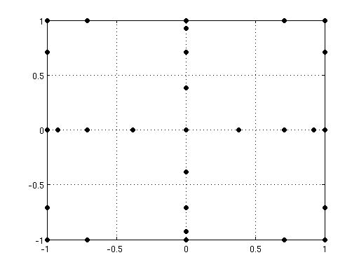 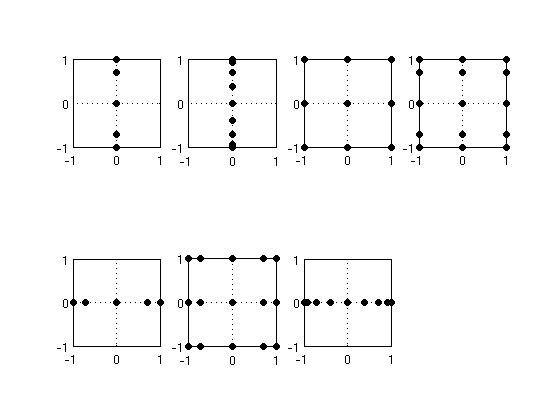
PART 1: INTRODUCTION - INGREDIENTS OF A SPARSE GRID. 1D KNOTS
% each of the tensor grids in the sparse grid is built by taking cartesian products of 1D distribution of % points (in general a different number of points in each direction). The Sparse Grid Matlab Kit provides % several knots families. These functions also return the quadrature weights associated to the knots % (more on this later) % Gauss-Legendre points: quadrature points to approximate integrals like \int_a^b f(x) dx with n points n=5; a=1; b=4; x=knots_uniform(n,a,b); figure plot(x,0*x,'ok','MarkerFaceColor','k','DisplayName','5 GL points') grid on % Clenshaw-Curtis points: nested quadrature points to approximate integrals like \int_a^b f(x) dx with n % points. If one "doubles" the number of points, the new points will include the old ones hold on n=5; a=1; b=4; x=knots_CC(n,a,b); plot(x,1 + 0*x,'or','MarkerFaceColor','r','DisplayName','5 CC points') n=9; a=1; b=4; x=knots_uniform(n,a,b); plot(x,-1 + 0*x,'ob','MarkerFaceColor','b','DisplayName','9 GL points (does NOT includes the 5 points)') n=9; a=1; b=4; x=knots_CC(n,a,b); plot(x,2 + 0*x,'og','MarkerFaceColor','g','DisplayName','9 CC points (includes the 5 points)') ylim([-1.5 4]) legend show % Leja points: nested quadrature points to approximate integrals like \int_a^b f(x) dx with n % points. Three different kind of Leja points are available: Line Leja, sym-Line Leja, p-disk Leja (see % leja_points.m for more details). All Leja points are nested by construction figure % ------- line leja ---------- n=5; a=1; b=4; x=knots_leja(n,a,b,'line'); plot(x,1 + 0*x,'or','MarkerFaceColor','r','DisplayName','5 Line Leja points') hold on n=9; a=1; b=4; x=knots_leja(n,a,b,'line'); plot(x,2 + 0*x,'or','MarkerFaceColor','r','DisplayName','9 Line Leja points') % ------- sym leja ---------- n=5; a=1; b=4; x=knots_leja(n,a,b,'sym_line'); plot(x,3 + 0*x,'ok','MarkerFaceColor','k','DisplayName','5 sym-line Leja points') hold on n=9; a=1; b=4; x=knots_leja(n,a,b,'sym_line'); plot(x,4 + 0*x,'ok','MarkerFaceColor','k','DisplayName','9 sym-Line Leja points') % ------- p-disk leja ---------- n=5; a=1; b=4; x=knots_leja(n,a,b,'p_disk'); plot(x,5 + 0*x,'ob','MarkerFaceColor','b','DisplayName','5 p-Disk Leja points') hold on n=9; a=1; b=4; x=knots_leja(n,a,b,'p_disk'); plot(x,6 + 0*x,'ob','MarkerFaceColor','b','DisplayName','9 p-Disk Leja points') grid on ylim([-1.5 12]) legend show % Gauss-Hermite points: quadrature points to approximate integrals like % % 1/sqrt(2 sig pi) \int_R f(x) e^{ -(x-mi)^2 / (2 sig^2) } dx % % with n points n=9; mu=0; sig=1; x=knots_gaussian(n,mu,sig); figure plot(x,0*x,'ok','MarkerFaceColor','k','DisplayName','9 GH points') grid on % Krondor - Patterson Nodes : nested quadrature points to approximate integrals as the previous hold on n=3; x=knots_kpn(n); plot(x,1 + 0*x,'or','MarkerFaceColor','r','DisplayName','3 KPN points') n=9; x=knots_kpn(n); plot(x, 2 + 0*x,'ob','MarkerFaceColor','b','DisplayName','9 KPN points') ylim([-1.5 4]) legend show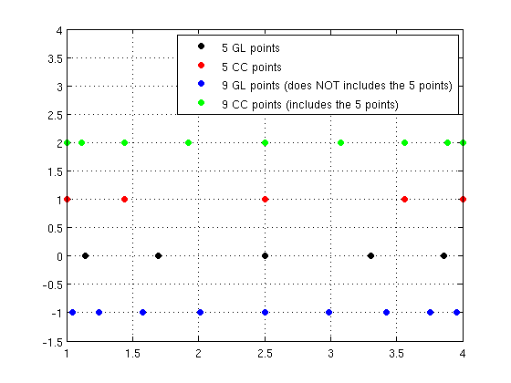 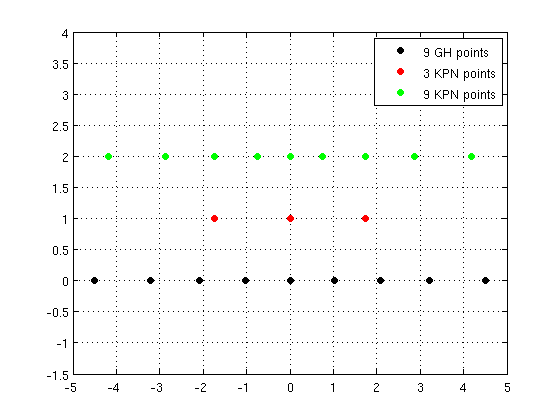 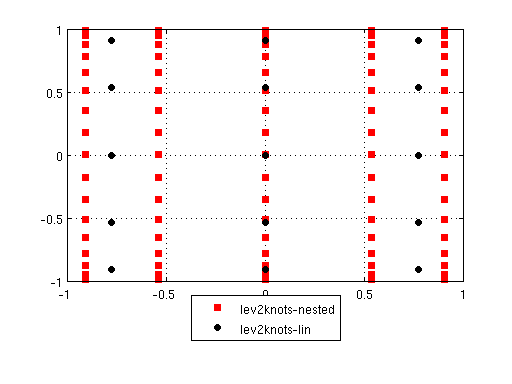
PART 1: INTRODUCTION - INGREDIENTS OF A SPARSE GRID. LEV2KNOTS FUNCTION.
% in view of building sparse grids, it is useful to order quadrature/interpolation rules in sequences, i.e. to % introduce levels for the rules. The Sparse Grid Matlab Kit provides 3 functions to this end: % -> lev2knots_lin % % adds 1 point from one level to the next: consecutive quadrature/interpolation rules have % 1,2,3,4,..points clc lev2knots_lin([1 2 3 4 5]) % -> lev2knots_2step % % adds 2 points from one level to the next: consecutive quadrature/interpolation rules have % 1,3,5,7,..points lev2knots_2step([1 2 3 4 5]) % -> lev2knots_doubling % % "doubles" the number of points from one level to the next: consecutive rules have 1,3,5,9,17... points lev2knots_doubling([1 2 3 4 5]) % -> lev2knots_kpn % % needed when using kpn knots which are tabulated. consecutive rules have 1,3,9,19,35 points. The latter % is the finest resolution possible lev2knots_kpn([1 2 3 4 5])
ans =
1 2 3 4 5
ans =
1 3 5 7 9
ans =
1 3 5 9 17
ans =
1 3 9 19 35
PART 1: INTRODUCTION - INGREDIENTS OF A SPARSE GRID. MULTI-INDEX SET
% the last ingredient to specify when building a sparse grid is the set of tensor grids to be used. The % algorithm will then take care of computing the coefficients of the linear combination of these grids % (note that such coefficients may be 0 as well). % The most convenient way to specify tensor grids is to use multi-index notation: every grid is % associated to a multiindex, that is a vector of integer numbers. % Each number in the vector tells the level of the quadrature rule used in each direction % of the parameter space. E.g. : the multiindex [3 5] is associated to the tensor grid % using a quad rule of level 3 in direction 1, and level 5 in direction 2. The actual number of points in % each direction depends by the level-knots relation specified by the lev2knots_*** function. clc N=2; ii=[3 5]; knots=@(n) knots_uniform(n,-1,1,'nonprob'); % knots S_lin=tensor_grid(N,lev2knots_lin(ii),knots); S_doub=tensor_grid(N,lev2knots_doubling(ii),knots); figure plot_grid(S_doub,[],'color','r','marker','s','MarkerFaceColor','r','DisplayName','lev2knots-nested'); hold on plot_grid(S_lin,[],'color','k','marker','o','MarkerFaceColor','k','DisplayName','lev2knots-lin'); legend show set(legend,'Location','SouthOutside') % there are two ways of specifying the set of multindices to be used. % % 1) The first one is to use the parameters "level" and "idxset" of the function SMOLYAK. % In this case, the multiindex set will include all the multiindices that satisfy the inequality % % idxset(ii)<= level % % by default, idxset is set to @(ii) sum(ii-1). The combination of idxset function and lev2knots function % defines the sparse grid type: using @(ii) sum(ii-1) with lev2knots_lin results in the so-called TD % (Total Degree) tensor grid, while @(ii) sum(ii-1) with lev2knots_doubling in the original SM (Smolyak) grid. % Some choices are available by using the function % % [lev2nodes,idxset] = DEFINE_FUNCTIONS_FOR_RULE(rule,rates) % % but any other set satisfying the so-called ``admissibility condition'' % (see e.g. Gerstner-Griebel ``Dimension-Adaptive Tensor-Product Quadrature'') can be used. clc N=2; knots=@(n) knots_uniform(n,-1,1,'nonprob'); w = 5; %level [lev2knots,idxset]=define_functions_for_rule('TD',N); S_TD = smolyak_grid(N,w,knots,lev2knots,idxset); % grid [lev2knots,idxset]=define_functions_for_rule('HC',N); S_HC = smolyak_grid(N,w,knots,lev2knots,idxset); % grid % plot the grid itself figure plot_grid(S_TD,[],'color','k','marker','o','MarkerFaceColor','k'); legend('TD-grid') figure plot_grid(S_HC,[],'color','k','marker','o','MarkerFaceColor','k'); legend('HC-grid') % 2) The second one is to use the function SMOLYAK_MULTIINDICES, where one specifies exactly % the set of multiindex that one wishes to use. Again, the set has to satisfy % the ``admissibility condition'', and the rows have to be in lexicographic order. C=[ 1 1; 1 2; 1 3; 1 4; 2 1; 2 2; ]; [adm,C] = check_set_admissibility(C); S_M = smolyak_grid_multiidx_set(C,knots,lev2knots); figure plot_grid(S_M,[],'color','b','marker','d','MarkerFaceColor','b'); axis([-1 1 -1 1])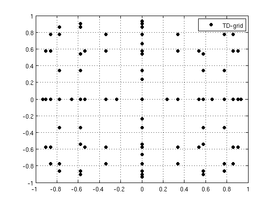 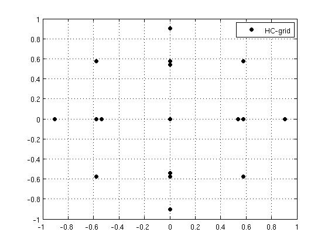 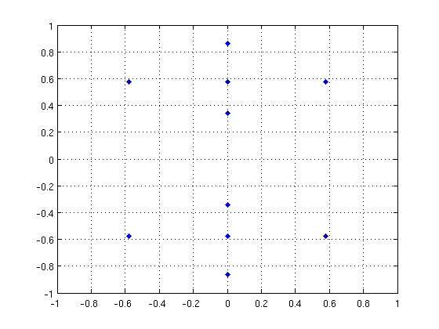 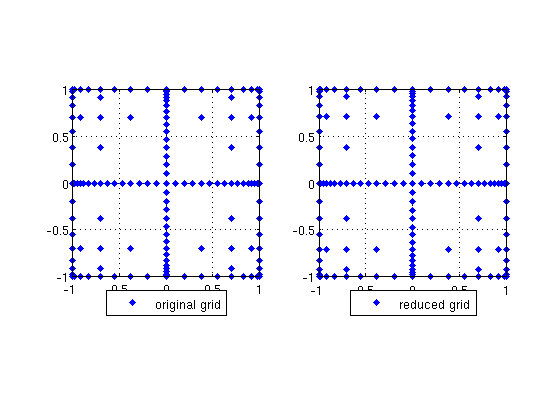
the package provides two functions to generate multi-index sets.
% a) MULTIIDX_BOX_SET generates all multiindices jj that are component-wise less than or % equal to some other index ii. The minimal value of the components of the indices to be generated can be either 0 or 1. For instance jj=[2 3]; C=multiidx_box_set([2 3],0); D=multiidx_box_set([2 3],1); figure plot(C(:,1),C(:,2),'xr','MarkerFaceColor','r','LineWidth',2,'MarkerSize',12,'DisplayName','Multiidx box set, min=0') hold on plot(D(:,1),D(:,2),'ok','MarkerFaceColor','k','DisplayName','Multiidx box set, min=1') axis([-0.5 4 -0.5 4]) legend show % b) MULTIIDX_BOX_GEN generates the set of all indices ii such that rule(ii)<=w, where rule is a function that takes as input a row vector % (or a matrix where each multiidx is stored as a row) and returns a scalar value (or a column vector with the result of the operation applied % to each row of the input index vector). Again, the minimum index can be 0 or 1: N=2; w=7; rule=@(I) sum(I,2); E=multiidx_gen(N,rule,w,0); F=multiidx_gen(N,rule,w,1); figure plot(E(:,1),E(:,2),'xr','MarkerFaceColor','r','LineWidth',2,'MarkerSize',12,'DisplayName','Multiidx gen, min=0') hold on plot(F(:,1),F(:,2),'ok','MarkerFaceColor','k','DisplayName','Multiidx gen, min=1') legend show axis([-0.5 8 -0.5 8])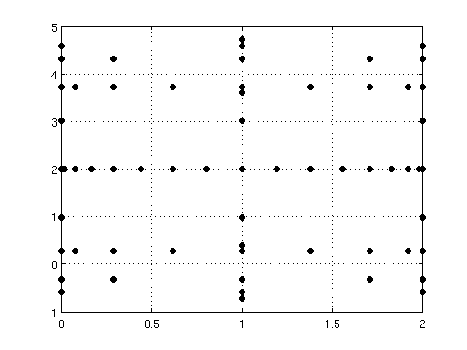 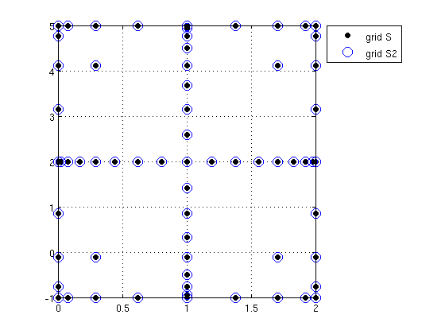
PART 1: INTRODUCTION - DATA-STRUCURE
% A sparse grid is represented as a vector of structures. Each element is a tensor grid, with fields % containing the knots, the corresponding integration weights, its coefficient in the linear combination, % and the number of points. % In general, the following conventions hold: % -> points in the space of parameters are columns-vector % -> multiindices are row-vector
PART 1: INTRODUCTION - MODIFY THE DOMAIN OF A SPARSE GRID
% it is easy to modify the domain of a sparse grid from (-1,1)^N to other hyper-rectangles. Two options are available clc clear N=2; % 1) generate knots on the desired hyper-rectangle (here (0,2)^2 ) knots=@(n) knots_CC(n,0,2,'nonprob'); w = 4; S = smolyak_grid(N,w,knots,@lev2knots_doubling); % 2) alternatively, use the standard interval and provide a shifting function to smolyak_grid. map=get_interval_map([0 0],[2 2],'uniform'); knots=@(n) knots_CC(n,-1,1,'nonprob'); S2 = smolyak_grid(N,w,knots,@lev2knots_doubling,[],map); % uses the default idxset disp('maximum difference between corresponding points in the two grids') max(max(abs([S.knots]-[S2.knots]))) figure plot_grid(S); hold on plot_grid(S2,[],'MarkerSize',10,'Marker','o'); legend('grid S','grid S2') set(legend,'Location','NorthEastOutside') % one can mix different intervals / different knots families on different directions. clc clear N=2; knots1=@(n) knots_CC(n,0,2,'nonprob'); knots2=@(n) knots_uniform(n,-1,5,'nonprob'); w = 4; S = smolyak_grid(N,w,{knots1,knots2},{@lev2knots_doubling,@lev2knots_lin}); figure plot_grid(S); % in case knots and lev2knots functions in the different directions are the same and the only thing that changes % is the definition interval, also using the standard interval and providing a shifting function to % smolyak_grid will do clc clear N=2; knots1=@(n) knots_CC(n,0,2,'nonprob'); knots2=@(n) knots_CC(n,-1,5,'nonprob'); w = 4; S = smolyak_grid(N,w,{knots1,knots2},@lev2knots_doubling); map=get_interval_map([0 -1],[2 5],'uniform'); knots=@(n) knots_CC(n,-1,1,'nonprob'); S2 = smolyak_grid(N,w,knots,@lev2knots_doubling,[],map); % uses the default idxset figure plot_grid(S); hold on plot_grid(S2,[],'MarkerSize',10,'Marker','o'); %max(max(abs([S.knots]-[S2.knots]))) legend('grid S','grid S2') set(legend,'Location','NorthEastOutside')
maximum difference between corresponding points in the two grids
ans =
0
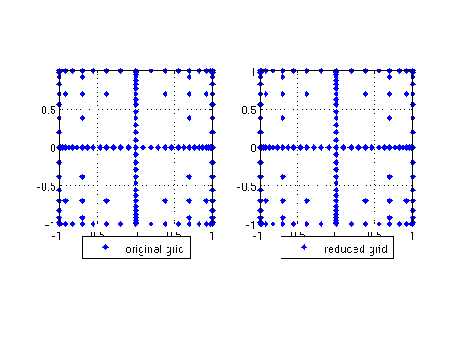 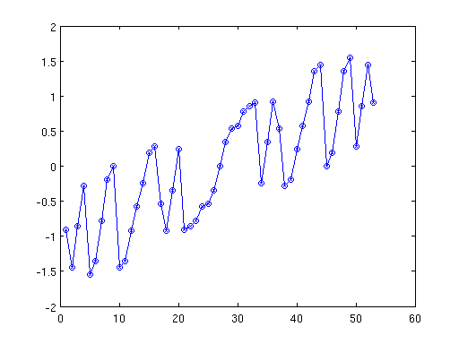 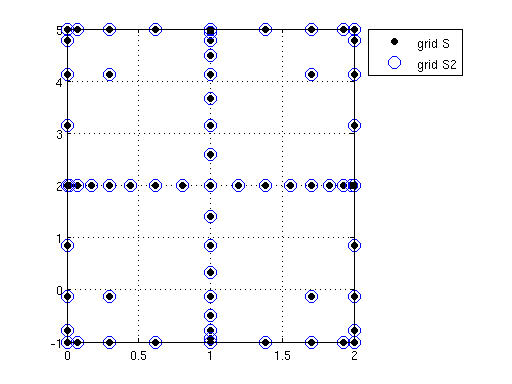 PART 1: INTRODUCTION - REDUCE A SPARSE GRID
% The tensor grids forming the sparse grid may have points in common (even when using non-nested points). % To save computational time during e.g. evaluation of a function on a sparse grid, it is then important % to get rid of these repetions. To this end, use the function reduce_sparse_grid. The quadrature weights % are of course consistently modified clc clear N=2; w=5; knots=@(n) knots_CC(n,-1,1,'nonprob'); [lev2nodes,idxset] = define_functions_for_rule('SM',N); S = smolyak_grid(N,w,knots,lev2nodes,idxset); Sr=reduce_sparse_grid(S); fprintf('size of original grid: %i\n',size([S.knots],2)) fprintf('size of reduced grid: %i\n',size(Sr.knots,2)) figure subplot(1,2,1) plot_grid(S,[],'color','b','marker','d','MarkerFaceColor','b'); axis square legend('original grid') set(legend,'Location','SouthOutside') subplot(1,2,2) plot_grid(Sr,[],'color','b','marker','d','MarkerFaceColor','b'); axis square legend('reduced grid') set(legend,'Location','SouthOutside')
size of original grid: 371 size of reduced grid: 145
PART 2: EVALUATE A FUNCTION ON A SPARSE GRID
% the kit comes with the function evaluate_on_sparse_grid, that allows to evaluate a function on the points of a sparse grid, and provides % -> recycling of previous evaluations % -> support for parallel evaluations. % Works for scalar-valued as well as vector-valued functions. Sparse grids passed as input must be reduced clc clear fs=@(x) sum(x); fv=@(x) 2*x; N=2; w=3; S=smolyak_grid(N,w,@(n) knots_uniform(n,-1,1),@lev2knots_lin); Sr= reduce_sparse_grid(S); % plain use of evaluate_on_sparse_grid: no recycling, no parallel evals_plain_fs=evaluate_on_sparse_grid(fs,Sr); evals_plain_fv=evaluate_on_sparse_grid(fv,Sr); % a direct computation pts = size(Sr.knots,2); os=size(fs(Sr.knots(:,1)),1); ov=size(fv(Sr.knots(:,1)),1); evals_direct_fs = zeros(os,pts); evals_direct_fv = zeros(ov,pts); for i=1:pts evals_direct_fs(:,i)=fs(Sr.knots(:,i)); evals_direct_fv(:,i)=fv(Sr.knots(:,i)); end % compare the two values find(evals_plain_fs~=evals_direct_fs) find(evals_plain_fv~=evals_direct_fv)
using serial using serial ans = Empty matrix: 1-by-0 ans = Empty matrix: 0-by-1
PART 2: EVALUATE A FUNCTION ON A SPARSE GRID - USE RECYCLING FEATURE
clc clear f=@(x) sum(x); N=2; w=3; S=smolyak_grid(N,w,@(n) knots_uniform(n,-1,1),@lev2knots_lin); Sr= reduce_sparse_grid(S); w=4; T=smolyak_grid(N,w,@(n) knots_uniform(n,-1,1),@lev2knots_lin); Tr= reduce_sparse_grid(T); evals_non_rec=evaluate_on_sparse_grid(f,Tr); evals_rec=evaluate_on_sparse_grid(f,Tr,evaluate_on_sparse_grid(f,Sr),Sr); max(abs(evals_non_rec(:)-evals_rec(:)))
using serial
using serial
new evaluation needed:28 recycled evaluations:25 discarded evaluations:4
using serial
ans =
8.653718960559769e-17
PART 2: EVALUATE A FUNCTION ON A SPARSE GRID - USE RECYCLING FEATURE FOR VECTOR OUTPUT
clc clear f=@(x) 2*x; N=2; w=1; S=smolyak_grid(N,w,@(n) knots_uniform(n,-1,1),@lev2knots_lin); Sr= reduce_sparse_grid(S); w=2; T=smolyak_grid(N,w,@(n) knots_uniform(n,-1,1),@lev2knots_lin); Tr= reduce_sparse_grid(T); evals_non_rec=evaluate_on_sparse_grid(f,Tr); evals_rec=evaluate_on_sparse_grid(f,Tr,evaluate_on_sparse_grid(f,Sr),Sr); max(abs(evals_non_rec(:)-evals_rec(:)))
using serial
using serial
new evaluation needed:8 recycled evaluations:5 discarded evaluations:0
using serial
ans =
9.020562075079397e-17
PART 2: EVALUATE A FUNCTION ON A SPARSE GRID - USE PARALLEL FEATURE
% parallel computation can be used both with and without recycling. The parallel procedure gets activated only % if at least X evaluations are queried, with X specified by the user. This is because parallel computations have some % communication overhead, therefore if function evaluations are fast the parallel evaluation may actually result slower % than the serial. clc clear f=@(x) sum(x); N=2; w=3; S=smolyak_grid(N,w,@(n) knots_uniform(n,-1,1),@lev2knots_lin); Sr= reduce_sparse_grid(S); w=4; T=smolyak_grid(N,w,@(n) knots_uniform(n,-1,1),@lev2knots_lin); Tr= reduce_sparse_grid(T); if ~check_if_parallel_on() activate_parallel() % optional argument to specify how many workers end X=0; evals_1=evaluate_on_sparse_grid(f,Tr,[],[],X); X=10; evals_2=evaluate_on_sparse_grid(f,Tr,[],[],X); X=100; evals_3=evaluate_on_sparse_grid(f,Tr,evaluate_on_sparse_grid(f,Sr),Sr,X); figure plot(evals_1) hold on plot(evals_2,'x') plot(evals_3,'o') if check_if_parallel_on() close_parallel() end % this command will now throw an error % % evals_1=evaluate_on_sparse_grid(f,Tr,[],[],0); % % Error using evaluate_on_sparse_grid>simple_evaluate (line 179) % no open matlabpool session detected
Starting matlabpool using the 'local' profile ... connected to 4 workers. using parallel using parallel using serial new evaluation needed:28 recycled evaluations:25 discarded evaluations:4 using serial Sending a stop signal to all the workers ... stopped.
PART 2: EVALUATE A FUNCTION ON A SPARSE GRID
see test_evaluate_on_sparse_grids.m for more examples
PART 3: INTEGRATION - BASICS
% In this part we show how to use the Kit to perform high-dimensional quadrature. We consider the % following function, for which we know the analytic expression of the integral % % f(x) = prod(1/sqrt(x_i + b)) in [-1,1]^N clc clear f = @(x,b) prod(1./sqrt(x+b)); b=3; N = 4; I_1d=(2*sqrt(1+b)-2*sqrt(-1+b)); I_ex = I_1d^N; % generate the knots and the SM grid. 'nonprob' means we are integrating w.r.t. the pdf rho(x)=1 and not rho(x)=1/prod(b_i - a_i) knots=@(n) knots_CC(n,-1,1,'nonprob'); w = 4; S = smolyak_grid(N,w,knots,@lev2knots_doubling); Sr = reduce_sparse_grid(S); % compute integral I=f([Sr.knots],b)*[Sr.weights]' %#ok<NOPTS> % alternatively use I2=quadrature_on_sparse_grid(@(x)f(x,b) , Sr); % Sr must be reduced here disp('----------') disp('difference between values') I-I2 %#ok<MNEFF,NOPTS> % compare with exact value disp('----------') disp('quad error') abs(I-I_ex)
I =
1.883984044753591
using serial
----------
difference between values
ans =
4.440892098500626e-16
----------
quad error
ans =
5.270941016988218e-08
PART 3: INTEGRATION - USE OTHER QUADRATURE KNOTS
% as already seen in the introduction, other quadrature knots are available clc clear f = @(x,b) prod(1./sqrt(x+b)); b=3; N = 4; I_1d=(2*sqrt(1+b)-2*sqrt(-1+b)); I_ex = I_1d^N; knots=@(n) knots_uniform(n,-1,1,'nonprob'); w = 4; S = smolyak_grid(N,w,knots,@lev2knots_doubling); Sr=reduce_sparse_grid(S); I=quadrature_on_sparse_grid(@(x)f(x,b) , Sr); % compare with exact value disp('----------') disp('quad error') abs(I-I_ex)
using serial
----------
quad error
ans =
2.358824247039593e-10
PART 3: INTEGRATION - MODIFY QUADRATURE DOMAIN
clear clc % suppose integrating over (-1,3)^N f = @(x,b) prod(1./sqrt(x+b)); b=3; N = 4; I_1d=(2*sqrt(3+b)-2*sqrt(-1+b)); I_ex = I_1d^N; % generate knots in (-1,3) knots=@(n) knots_CC(n,-1,3,'nonprob'); w = 6; S = smolyak_grid(N,w,knots,@lev2knots_doubling); Sr= reduce_sparse_grid(S); I=quadrature_on_sparse_grid(@(x)f(x,b) , Sr); % alternatively, use points on (-1,1) and provide a map to smolyak_grid. VERY IMPORTANT: note that since we % are using 'nonprob' quadrature weights, we need to modify the quadrature weights as well. More precisely, % since the original interval is -1,1 and the final interval is -1,3, weights in each direction should be % multiplied by 2, which means that the weights of the sparse grid should be multiplied by 2^N. Pass this % value as input to smolyak_grid. However, we discourage this procedure and we suggest to initialize the % sparse grid with knots already in their final interval. Modification of weights is not needed when using % 'probability' weights which must sum to 1 regardless of the integration interval. knots=@(n) knots_CC(n,-1,1,'nonprob'); map=get_interval_map([-1 -1 -1 -1],[3 3 3 3],'uniform'); S2 = smolyak_grid(N,w,knots,@lev2knots_doubling,[],map,2^N); S2r = reduce_sparse_grid(S2); I2=quadrature_on_sparse_grid(@(x)f(x,b) , S2r); disp('----------') disp('difference between the two sparse grids') I-I2 %#ok<MNEFF,NOPTS> % compare with exact value disp('----------') disp('quad error') abs(I-I_ex)
using serial
using serial
----------
difference between the two sparse grids
ans =
0
----------
quad error
ans =
1.807927674235543e-08
PART 3: INTEGRATION - COMPUTE MOMENTS OF RANDOM VARIABLES
% here we compute E[f(x)] = \int_{[-2 1]x[0.5 6]} f(x) 1/(3*5.5) dx, (3*5.5 is the size of the domain) clc clear f = @(x,b) prod(1./sqrt(x+b)); b=3; N = 2; I_ex = 1/3/5.5*(2*sqrt(1+b)-2*sqrt(-2+b))*(2*sqrt(6+b)-2*sqrt(0.5+b)) %#ok<NOPTS> % the best-practice is to generate knots on (-2,1) and (0.5,6), specifying 'prob' as input to the % knots-generatic function knots1=@(n) knots_CC(n,-2,1,'prob'); % knots1=@(n) knots_CC(n,-2,1); would work as well as 'prob' is the default value knots2=@(n) knots_CC(n,0.5,6,'prob'); % knots2=@(n) knots_CC(n,0.5,6); would work as well as 'prob' is the default value w = 6; S = smolyak_grid(N,w,{knots1,knots2},@lev2knots_doubling); Sr = reduce_sparse_grid(S); I=quadrature_on_sparse_grid(@(x)f(x,b) , Sr); % as an alternative, generate probabilitstic weights on -1,1 and provide a map to smolyak_grid. Note that % probabilistic weights always sum to 1, so there is no need to rescale weights knots=@(n) knots_CC(n,-1,1); map = get_interval_map([-2 0.5],[1 6],'uniform'); w = 7; T = smolyak_grid(N,w,knots,@lev2knots_doubling,[],map); Tr = reduce_sparse_grid(T); I2=quadrature_on_sparse_grid(@(x)f(x,b) , Tr); % clearly, you may as well generate non-probabilitstic weights on -1,1 and provide both a map and a weight_fact to smolyak_grid. knots=@(n) knots_CC(n,-1,1,'nonprob'); map = get_interval_map([-2 0.5],[1 6],'uniform'); w = 7; R = smolyak_grid(N,w,knots,@lev2knots_doubling,[],map,1/2^2); Rr = reduce_sparse_grid(R); I3=quadrature_on_sparse_grid(@(x)f(x,b) ,Rr); disp('----------') disp('compare the values') [I; I2; I3] %#ok<NOPTS> % compare with exact value disp('----------') disp('quad error') abs(I-I_ex)
I_ex =
0.273738498572856
using serial
using serial
using serial
----------
compare the values
ans =
0.273738498571860
0.273738498572856
0.273738498572856
----------
quad error
ans =
9.954259638789154e-13
PART 3: INTEGRATION - RECYCLE EVALUATIONS FROM PREVIOUSLY COMPUTED GRIDS AND PARALLEL COMPUTATION
% just as evaluate_on_sparse_grid, quadrature_on_sparse_grid provides evaluation recycling and % parallel evaluation clc clear f = @(x,b) prod(1./sqrt(x+b)); b=5; N = 2; % the starting grid w = 7; S = smolyak_grid(N,w,@(n) knots_CC(n,-2,1,'prob'),@lev2knots_doubling); Sr = reduce_sparse_grid(S); [IS,evals_S]=quadrature_on_sparse_grid(@(x)f(x,b), Sr); % the new grid w = 8; T = smolyak_grid(N,w,@(n) knots_CC(n,-2,1,'prob'),@lev2knots_doubling); Tr = reduce_sparse_grid(T); % the recycling call. Other optional arguments can turn on parallel % evaluation and tune the tolerance for two points to be considered equal. % See help quadrature_on_sparse_grid and test_evaluate_on_sparse_grid IT_rec=quadrature_on_sparse_grid(@(x)f(x,b),Tr,evals_S,Sr); % the non-recycling call IT=quadrature_on_sparse_grid(@(x)f(x,b) , Tr); if ~check_if_parallel_on() activate_parallel() % optional argument to specify how many workers end % the parallel call with no recycling IT2 = quadrature_on_sparse_grid(@(x)f(x,b) , Tr, [],[],0); % the parallel call with recycling IT3=quadrature_on_sparse_grid(@(x)f(x,b),Tr,evals_S,Sr,0); disp('-------------') disp('difference between the results') [IT_rec; IT; IT2; IT3] %#ok<NOPTS>
using serial Warning: more than 255 points are asked in one direction, using uint16 to handle this Warning: more than 255 points are asked in one direction, using uint16 to handle this new evaluation needed:832 recycled evaluations:705 discarded evaluations:0 using serial using serial Starting matlabpool using the 'local' profile ... connected to 4 workers. using parallel new evaluation needed:832 recycled evaluations:705 discarded evaluations:0 using parallel ------------- difference between the results ans = 0.228763833671746 0.228763833671746 0.228763833671746 0.228763833671746
PART 3: INTEGRATION - HOW TO BUILD MORE COMPLEX SPARSE GRIDS. ANISOTROPIC GRIDS
clear clc f = @(x,b) prod(1./sqrt(x+b)); b=3; N = 4; I_1d=(2*sqrt(1+b)-2*sqrt(-1+b)); I_ex = I_1d^N; % specify a rule like in Back Nobile Tamellini Tempone, `Stochastic Spectral Galerkin and Collocation...a numerical comparison'' rates=[1 2 2 2]; knots=@(n) knots_uniform(n,-1,1,'nonprob'); [lev2nodes,idxset] = define_functions_for_rule('TD',rates); w=4; [S2] = smolyak_grid(N,w,knots,lev2nodes,idxset); % use it to compute integral I=quadrature_on_sparse_grid(@(x) f(x,b),reduce_sparse_grid(S2)); % compare with exact value disp('----------') disp('quad error') abs(I-I_ex)
using serial
----------
quad error
ans =
1.456974987823489e-04
PART 3: INTEGRATION - HOW TO BUILD MORE COMPLEX SPARSE GRIDS. USE SMOLYAK_MULTIINDICES
% As seen in the introduction, specify directly the set of multiindices involved. % Here, we generate the box set of all multiindices <= of [3 5 2 3] in lexicographic order clc clear f = @(x,b) prod(1./sqrt(x+b)); b=3; N = 4; I_1d=(2*sqrt(1+b)-2*sqrt(-1+b)); I_ex = I_1d^N; C = multiidx_box_set([3 5 2 3],1); % X is C without [3 5 2 3] knots=@(n) knots_uniform(n,-1,1,'nonprob'); S3=smolyak_grid_multiidx_set(C,knots,@lev2knots_lin); % use it to compute integral (-1,1 Lebesgue measure) I=quadrature_on_sparse_grid(@(x) f(x,b),reduce_sparse_grid(S3)); % compare with exact value disp('----------') disp('quad error') abs(I-I_ex)
using serial
----------
quad error
ans =
6.552113139615123e-04
PART 3: INTEGRATION - CONVERGENCE STUDY
% see test_sparse_quadrature.m
PART 4: INTERPOLATION ON A SPARSE GRID. BASICS
% the sparse grid also provides an interpolant / surrogate model for the original function. The % interpolant can be evaluated in non-grid points. % % All the previous topics (changing the domain, building anisotropic grids ...) apply immediately to % the interpolation case. clc clear f = @(x,b) prod(1./sqrt(x+b)); b=3; N = 4; w=8; knots=@(n) knots_uniform(n,-1,1,'nonprob'); [S] = smolyak_grid(N,w,knots,@lev2knots_lin); Sr=reduce_sparse_grid(S); %non_grid_points=rand(N,100); non_grid_points=[0.5*ones(N,1), zeros(N,1)]; function_on_grid=f(Sr.knots,b); f_values = interpolate_on_sparse_grid(S,Sr,function_on_grid,non_grid_points); disp('----------') disp('Interpolation error') max( abs( f_values-f(non_grid_points,b) ) )
----------
Interpolation error
ans =
5.228585875372005e-08
PART 4: INTERPOLATION ON A SPARSE GRID - INTERPOLATION ERROR ON SPARSE GRID POINTS
% since the sparse grid is a linear combination of several tensor grid interpolants, the interpolation % error in a point of the sparse grid is not necessarily zero, unless all tensor interpolats % include that point clc clear f = @(x,b) prod(1./sqrt(x+b)); b=3; N = 4; % a sparse grid with non-nested points: interpolation error in sparse grid points will be % non-zero in general w=4; knots=@(n) knots_uniform(n,-1,1,'nonprob'); S = smolyak_grid(N,w,knots,@lev2knots_lin); Sr=reduce_sparse_grid(S); non_grid_points=zeros(N,1); function_on_grid=evaluate_on_sparse_grid(@(x) f(x,b), Sr); f_values = interpolate_on_sparse_grid(S,Sr,function_on_grid,non_grid_points); disp('----------') disp('Interpolation error - non-nested grid') max( abs( f_values-f(non_grid_points,b) ) ) % the interpolation error will instead be zero if we use nested points and % consider e.g. [0 0 0 0] which belongs to all of the tensor grids knots=@(n) knots_CC(n,-1,1,'nonprob'); T = smolyak_grid(N,w,knots,@lev2knots_doubling); Tr=reduce_sparse_grid(T); non_grid_points=zeros(N,1); function_on_grid=f(Tr.knots,b); f_values = interpolate_on_sparse_grid(T,Tr,function_on_grid,non_grid_points); disp('----------') disp('Interpolation error - nested grid') max( abs( f_values-f(non_grid_points,b) ) )
using serial
----------
Interpolation error - non-nested grid
ans =
8.556139706267230e-06
----------
Interpolation error - nested grid
ans =
2.775557561562891e-16
PART 4: INTERPOLATION ON A SPARSE GRID - CONVERGENCE STUDY
% see test_sparse_interpolation.m
PART 5: COMPUTE THE g-PCE OF A FUNCTION GIVEN ITS SPARSE GRID APPROXIMATION
% the kit provides a function to compute the generalized Polynomial Cahos Expansion (g-PCE) of a function % of several variables, i.e. the expansion of f in terms of a sum of orthonormal polynomials. % The coefficients of this expansion are defined as suitable integrals over the space of parameters, and % could thus be approximated with sparse grid quadrature. However, a more efficient technique can be % applied, and it actually implemented in the Kit. It consists in rearranging the sparse grid % interpolant, which is a linear combination of Lagrange polynomials, as a summation of Legendre % polynomials (i.e. performing a change of base to express the same polynomial). Given the relations % between sparse grids and orthogonal expansion, it is alway possible to tune the sparse grid so to % obtain the gPCE in a precise polynomial space. % % See e.g. Back Nobile Tamellini Tempone, `Stochastic Spectral Galerkin and Collocation...a numerical % comparison'' for more details on the sparse grid/orthogonal expansion relation and Tamellini ph.D. % thesis, chap.6 or MOX report 13/2012 by Formaggia Guadagnini Imperiali Lever Porta Riva Scotti Tamellini % for details on the conversions % % more examples can be found in test_convert_to_modal.m clc clear % the sparse grid N=2; w=5; knots=@(n) knots_uniform(n,-1,1,'nonprob'); lev2knots=@lev2knots_lin; idxset=@(i) prod(i); S=smolyak_grid(N,w,knots,lev2knots,idxset); Sr=reduce_sparse_grid(S); % the domain of the grid domain=[-ones(1,N); ones(1,N)]; % compute a legendre polynomial over the sparse grid X=Sr.knots; nodal_values = 4*lege_eval_multidim(X,[4 0],-1,1)'+... 2*lege_eval_multidim(X,[1 1],-1,1)'; % conversion from the points to the legendre polynomial. I should recover it exactly [modal_coeffs,K] = convert_to_modal(S,Sr,nodal_values,domain,'legendre'); [K,modal_coeffs] %#ok<NOPTS>
ans =
0 0 0
0 1 0
0 2 0
0 3 0
0 4 0
1 0 0
1 1 2
2 0 0
3 0 0
4 0 4